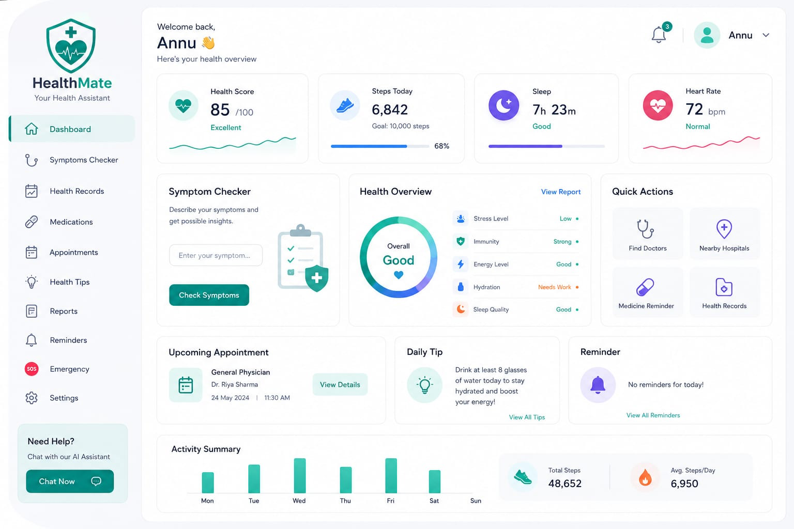

Arogya is an intelligent, user-centric web assistant built to simplify primary personal healthcare tracking. It bridges the gap between raw health symptoms and foundational medical insights, giving users a highly responsive platform to assess preliminary wellness indicators.
The system works through an interactive conversational interface. Users input localized symptoms or track critical health metrics (like BMI, daily water targets, or sleep schedules). The logic models process these text parameters against curated clinical data objects to generate immediate educational guidance summaries.
The project roadmap involves integrating complete medical API data endpoints, live virtual scheduling webhook integrations, and encrypted local storage architecture to track health progress over monthly spans safely.